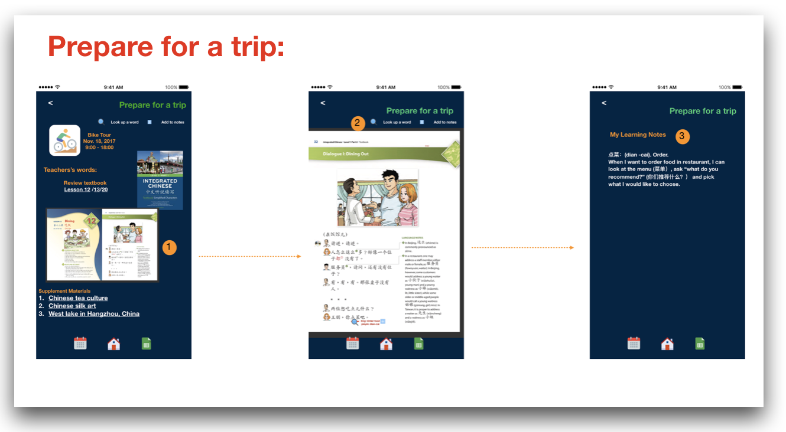

Chinese 360 is a mobile learning app for CFL (Chinese as foreign language) learners to practice Chinese in trips. It enables users to schedule a trip, prepare for a trip and practice in a trip by providing learning materials, learning tasks, embedded translation tools, and assessment tools.
Duration: 4 months (Sep-Dec 2017)
My Role: UX researcher and designer (individual project)
Output: A hi-fi digital prototype
My leading design philosophy of this project is “learning by doing”. I believe that well-designed learning tasks can effectively trigger learners’ interest and keep them actively participating in learning. I also practice “participatory design”, by including the users in the design process and frequently seeking their feedback. It is from the user research, that I truly understand the problem; and it is from the participatory design, that I make right design decisions. Last but not least, I value the opinions form experts, i.e. the principle and teathe principle and teachers in the language learning center in my case, who provide me with a lot of professional suggestions.
According to 2016 China Briefing, China has 600,000 expats across the nation, living, working and for long-term living. These CFL (Chinese as foreign language) learners attended evening classes and weekend courses, to improve their language proficiency; however, they feel big gap between what they learn in the classroom and what they can use in the real life.I feel interest to explore how to help this group of people learn Chinese language and culture in an interesting and effective way.
In this project, I will find out:
1. What is the best method to link traveling and language learning in the field of CFL (Chinese as foreign language learning)?
2. How can technology facilitate language learning in the travel context?
To understand how foreigners live and learn in China, I interviewed 6 CFL learners living in Shanghai, 2 teachers teaching in a leading Chinese learning center, and got survey response from 20 students in the center. Key Findings are as below:
1. Apps, multimedia and authentic language materials are widely used in modern CFL classroom, which serves as good learning material. But the practicing method are comparatively backward, mostly in the form of drilling, role-play, film-dubbing, and coffee chat with native speaker.
2. “City Tour” , a learning activity guided by teacher to walk in cities and explore the cultural phenomenon is an innovated learning product, but lack of systematic learning task design and effective learning assessment.
Based on the user research findings,I propose Chinese 360, a mobile app for CFL learners to practice language in trips. It provides e-learning task package , embedded translation tools and assessment tools.It aims to create:
1. an authentic learning context of vocabulary and useful expressions
2. collaborative learning experience like vocabulary scavenger hunt, and
3. meaningful tasks to fulfill the functional use of language.
Key Features include:
1. Schedule a trip
2. Prepare for a trip
3. Practice in a trip
When schedule a trip, information is provided such as (1) the requirement of language proficiency, and (2) the learning task description. I believe these two are the most important for learners to decide whether or not to register a trip.
When prepare for a trip, the app provides (1) recommended learning materials from both textbook and supplement video clips, (2) an embedded dictionary for looking up words and phrases, and (3) learning notes for learners to record important things while learning.
When practice in a trip, I designed the whole task package with teachers and students of the You Mandarine Center. The package now features vocabulary hunt in the real world, information gap exercise , functional use of language (such as order food and book train ticket), and GPS-based identification task according to the provided clue. learners can also conveniently refer to the learning notes, and add new things into the learning notes.